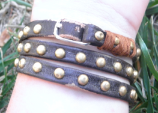
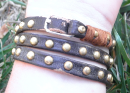

8-13-2012
Shoe-Strap Bracelet

These are some of my favorite shoes. They used to be Gladiator style, but the straps were falling apart. I cut off the back and straps and made them flip-flops, and in true Up-Cycle fashion I decided to make the straps into a fabulous wrap bracelet!
.png)
Choose a starting strap that has enough room on one end to eventually wrap around the buckle. Tie embroidery floss around the non-buckle end and start the wrapping frenzy! Once you get to a point where you want to attach another strap add a dab of glue to hold the two straps together and wrap the embroidery floss tightly around it. Once you connect the straps tie a knot in the embroidery floss. Repeat this process with all the straps, ensuring your ending strap has holes to attach to the buckle.
 

Now it's time to add your clasp. I used the buckle from my original shoes. Wrap your bracelet around your wrist and determine where you need the buckle to go. Cut your first strap to the necessary length and feed your buckle through it. Wrap with embroidery floss to secure.
Congratulations!! You've just made a wrap bracelet and get to keep wearing your favorite shoes! Check back soon for more crafts or visit Upcycled Crafts for other ideas!
.png)